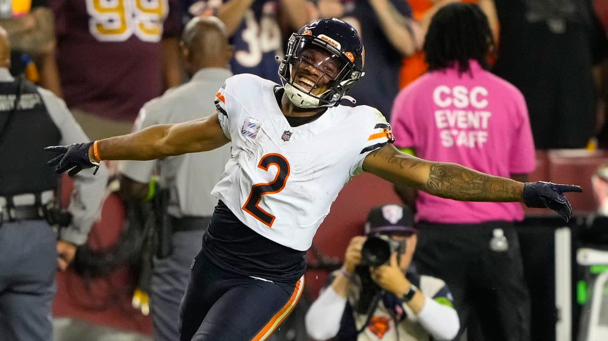

Matchup of the Week
*️⃣ 8====D (4-1) vs. Sweet Brotha Numpsay (3-2) *️⃣
Pangy thinks he deserves some respek, here’s the time to earn it. This should be a close matchup as both teams strike fear into their opponents, boasting the lowest Points Against (okay, PJ is third least, but it’s close).
What to Watch:
Can PJ replace Jefferson? He’s got some solid WRs with Aiyuk, Waddle and Flowers, but they’re all up-and-down. Andrews and Hall seem to be coming on at the right time, which should help.
Coming on at the right time, you say? Burrow is alive! 🧟♀️ Pangy has solid starters at every position, coming on at #9 or below… besides Burrow. Scary!
Waiver Wire Wizard
🧙🏻♂️ Diggin That Bijan Mustard - Russell Wilson ($3) * While the real-life Broncos might suck (the jury is still out, I know), Russ is cooking in FFB at QB8. This fills a real need on CJ’s team if he can continue to put up those (first half mostly) numbers.
Honorable Mentions
Jus Kareem-n for Herb - Jeff Wilson Jr. ($3) * Wilson doesn’t have the best history of being healthy/available. But when he’s on the field, he’s explosive. It’ll be real interesting to see how Miami shares the ball in the coming weeks, missing Achane. JA MONTG - Emari Demarcado ($13) * We know him, we love him, he’s Emari Demarcado… lol. But for real the Cards can run the ball and he’s likely to put up something similar to Conner’s output.
Cries for Help
😭 Nothing too bad this week, seems we’re into the calmer waiver weeks as budgets dwindle. But the waivers were also a desolate wasteland. Hence, $6 for Jason Meyers (8====D). He’s only got one 10+ point week, but lots of green matchups in the next few weeks (and no byes).
Week Six Power Rankings
👑 Diggin That Bijan Mustard (3-2) 🔂
Waiver Budget: $62
Consistency is King. CJ stays at the top, avoiding the #1 curse, with a W and another solid week. Off to a slow start after starting Russ on TNF. But looks to be carried this week by Allen, Diggs and the new #1 option in Minnesota - Hockenson.
2. 8====D (4-1) 🔂
Waiver Budget: $65
Holding onto the best record, but getting no love in the rankings! PJ loses all his morals and now has two Bears on his team. I smell a loss coming on.
3. Tua Williams One Kupp (3-2) ⬆️⬆️
Waiver Budget: $23
Seif moves up two spots… and I wonder if this is an underreaction? 209 points is good. Cooper Kupp is good. Ja’marr Chase is good. And holy shit is DJ Moore good, turning 10 target into 8 catches, 230 yards and 3 TDs, yeesh. LaPorta might be a league winner too. This team doesn’t have many holes - Henry seems like the worst starter.
4. JA MONTG (2-3) ⬆️
Waiver Budget: $62
Tony has a great week, solidifying last week’s rankings. The slow start is revving up. Avoids a long-term injury with Kelce, who is somehow played this week on a high ankle sprain, and put up 20+.
5. Sweet Brotha Numpsay (3-2) ⬇️
Waiver Budget: $34
I continue to hate on Pangy, let’s see if he can change my mind this week. Butker gets him going on TNF with a 17-point performance. How fitting that Pangy has three Niners now after sending Swift out to Andy. If the wins keep coming in, Achane could be a huge boost down the stretch… though do we even know what is wrong with his knee?
6. Hurts Donut (2-3) ⬇️⬇️⬇️
Waiver Budget: $61
Unfortunately all that has been gained via Puka has been lost at with the dismal production of Olave over the last two weeks. What is going on in NO? I have no idea. Tough matchup this week against CJ - Joel will look to Dallases, Goedert and Dallas D to help him get back top half of the league.
7. Love Heem (3-2) ⬆️
Waiver Budget: $37
Big win against Pangy last week, but only moves up a spot. My brain won’t let me believe that Thielen and Gabe Davis will continue to be this good and/or consistent. But I have a feeling that my brain might be wrong, and we’ll see this team rise in the Turner Bowl. Good week for Kris to have Andy’s Achane go out, while upgrading Mostert.
8. Exotic Engrams (2-3) ⬆️
Waiver Budget: $50
I lost by 100+ points, but somehow moved up a spot? My roster construction is better than Andy, but you’ll read about that shortly…
9. Jus-Kareemn-4-Herb (2-3) ⬇️⬇️
Waiver Budget: $12
Minus points for having a team name where the player has moved on. Minus two spots for losing Achane to the IR when Andy needs wins. You can never blame the man for not trying though - Andy takes no time filling the spot with the D’Andre Swift, who’s playing like the player that was drafted by the Lions, but had Dan Campbell holding him back. Oh the Eagles’ line helps a bit too.
💩 Unpaid Bills (1-4) 🔂
Waiver Budget: $60
Gotta love Rip focusing his skills elsewhere with the $0 spend on Wednesday. God please let me beat him this week.
Good luck to everyone besides Neil! 💵
“My wife called me last night before she went to bed. She said she was worried about me. She said, ‘Are you getting any sleep?’” Martindale told reporters on Thursday. “I said, ‘Yeah, I’m sleeping like a baby. Every two hours I wake up and cry and go to the bathroom and try to go back and get some more sleep.’
- Don “Wink” Martindale (Giants DC)